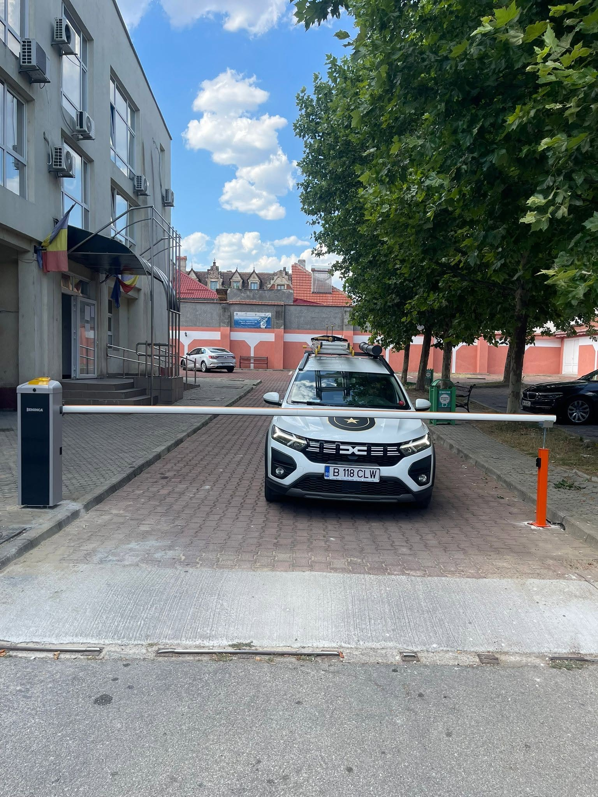

Physical lane control
The barrier and arm are selected according to lane width and expected operating frequency.
About the service
The barrier is only the physical control point. The solution combines vehicle identification, access rules, lane-safety components and, where required, operator verification. It can manage staff parking, visitors, deliveries or restricted vehicle areas.
The access-point solution
The configuration is established after assessing the lane, operating frequency and access rules. These components work together to manage vehicle movement.
The barrier and arm are selected according to lane width and expected operating frequency.
Access may use cards, remote controls, codes or number-plate recognition where that option is included.
The control unit applies the rights, schedules and restrictions established for each user category.
Loops and photocells support the detection of vehicles or obstacles in the arm’s movement area.
Warning lights and traffic signals indicate barrier status and the permitted direction of travel.
An intercom and camera can help a guard or operator verify a visitor before granting access.
Gallery
Two examples of barriers installed at vehicle access points.

